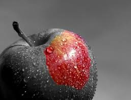

About the Book
"The Giver" is a dystopian novel written by Lois Lowry. It is set in a seemingly perfect society where everything is controlled, but with a dark secret hidden beneath the surface. The story revolves around Jonas, a young boy who is chosen to be the Receiver of Memory, a role that exposes him to the truth about his community's controlled existence.
Key Characters
- Jonas 
- The Giver
- Fiona
Themes
"The Giver" delves into various themes, including the importance of individuality, the consequences of conformity, and the power of memories. It challenges readers to question the price of a seemingly perfect society and the value of emotions and experiences in shaping our humanity.
Reviews
"The Giver is a thought-provoking masterpiece that challenges our understanding of a utopian society. It's a must-read for everyone!"